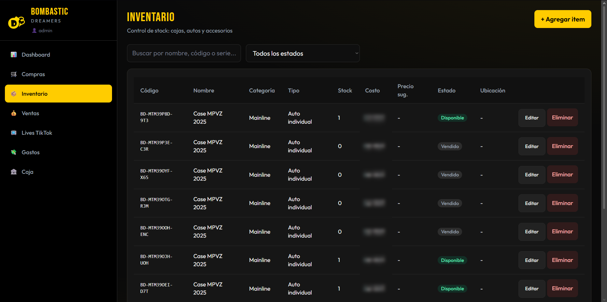
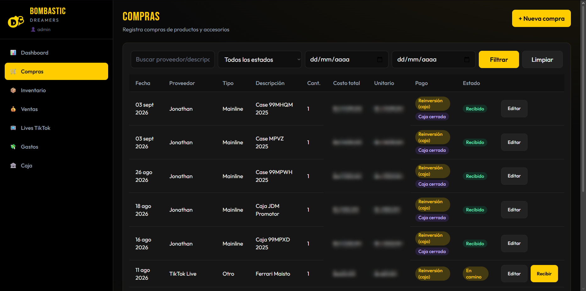
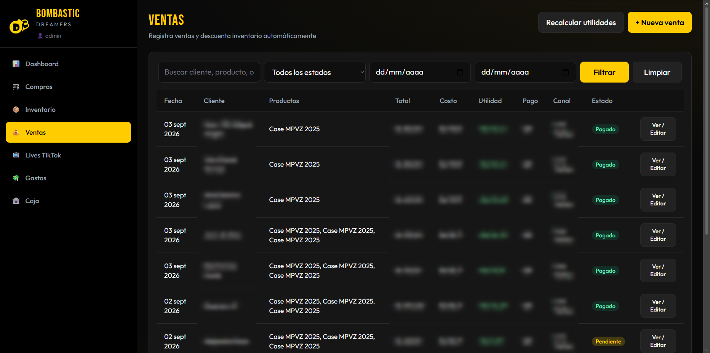
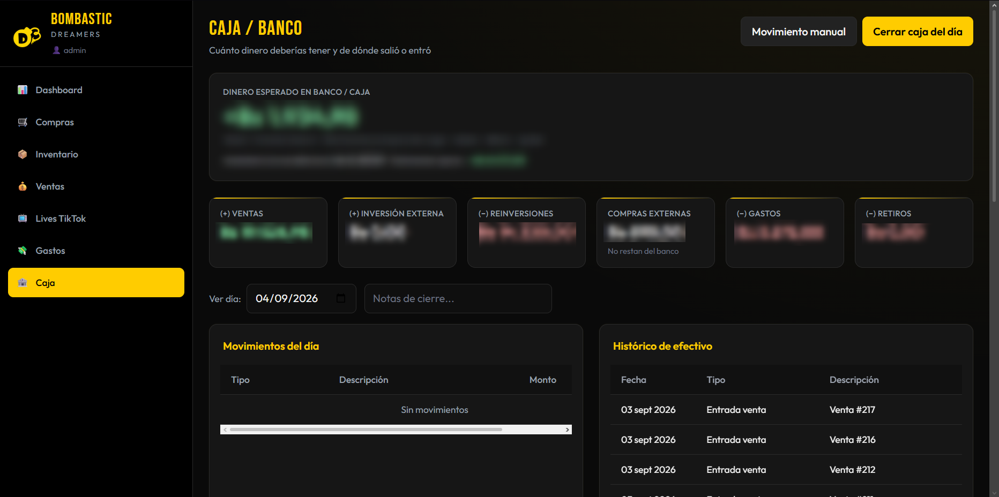
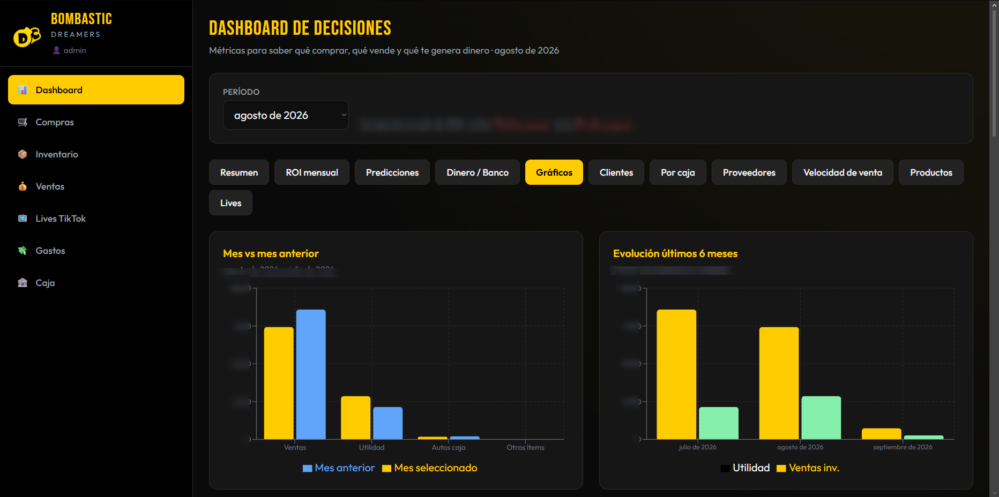

Inventario, ventas, compras y rentabilidad · colaboración · Terminado
Un sistema de inventario, compra y venta con análisis de negocio: para saber qué entra, qué se vende y qué deja margen — no para adivinarlo al cierre del mes.
.NETBlazorSQL ServerC#
Contexto
Bombastic Dreamers opera un negocio de coleccionismo: cajas, autos y accesorios, compras irregulares, ventas por canal (incluido TikTok Live) y una caja que no perdona el desorden. Colaboré en el análisis y el desarrollo del sistema; no soy el dueño del negocio.
Problema
Sin un modelo único, el inventario, las compras y las ventas viven en islas. Eso oculta el costo de cada pieza, retrasa el cuadre de caja y hace imposible hablar de rentabilidad con números. El análisis de negocio no puede ser una hoja aparte: tiene que salir del mismo flujo que opera el día.
Mi participación
Participé en el análisis del flujo y en el desarrollo de los módulos que lo sostienen: inventario, compras, ventas, caja y la lectura de rentabilidad. El criterio: el dato se captura una vez —al comprar, al vender, al mover caja— y se reutiliza en cada vista, incluido el dashboard de decisiones.
Proceso
Mapear cómo entra un producto, cómo se vende y cómo se cierra el día.
Inventario de stock (cajas, autos, accesorios) con costo, precio y estado.
Compras ligadas a proveedor, recepción y forma de pago —incluida reinversión de caja.
Ventas que descuentan inventario al registrar y calculan utilidad por operación.
Caja / banco: de dónde salió o entró el dinero, y cuánto debería haber.
Análisis de negocio: dashboard para decidir qué comprar, qué vende y qué genera margen.
Pantallas

Inventario — stock, estado y ubicación

Compras — de pedido a recepción

Ventas — descuenta stock y calcula utilidad

Caja / banco — de dónde salió o entró

Rentabilidad — mes contra mes y tendencia
Arquitectura y datos
SQL Server como núcleo. Blazor para la operación diaria. El inventario no es una lista suelta: es el resultado de compras, ventas y ajustes. La rentabilidad sale de cruzar costo, precio y movimiento. El dashboard no inventa indicadores: los lee del mismo modelo que usa quien abre y cierra la tienda.
Resultado
El negocio registra el ciclo completo: compra, stock, venta, caja y margen. Se puede decidir con el dashboard —qué reponer, qué se estanca, qué deja plata— en lugar de esperar una planilla de fin de mes. Para mí el valor está en haber traducido un oficio (coleccionismo) a un sistema que un operador usa sin ser programador.
Aprendizajes
En un emprendimiento el usuario es quien abre y cierra la tienda: si el flujo tiene un paso de más, no se usa. El análisis de negocio solo sirve si nace de la operación, no si se agrega después como un reporte. A futuro: cortes más finos por línea de producto y una auditoría más explícita de cada movimiento de caja.